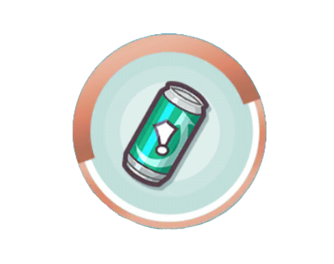
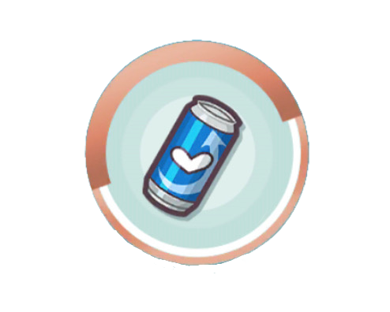
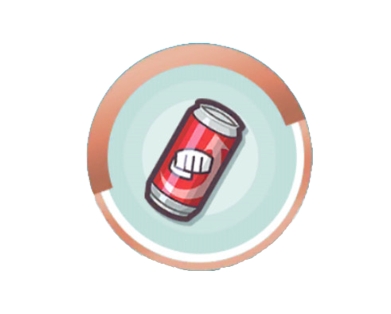

The gameplay of Pokemon Masters is quite different from the main games in the Pokemon Series in a few different ways:
This game features a 3v3 style gameplay, and in some very rare cases, 1v1.
Instead of catching Pokemon, you instead use your Poryphone (it acts like a menu) to "Scout" Trainers and their Pokemon,
known as "Sync Pairs." You can then take them into battle.
In this game, both Pokemon and trainers can perform moves. Trainer moves tend to raise the Pokemon's stats, while Pokemon moves tend to
be damaging attacks. You can select moves by tapping on them.
At the bottom of your screen, there is a bar called the Move Gauge, which charges over time. Most Pokemon attacks and some
Trainer Moves require a certain amount of the individual bars that the large one is split up into. These are called Move Points.
Unlike the main series games, this game has a loose turn-based system, as you can select moves at any time, as long as you have enough Move
Points, and you have not selected another move with one Sync Pair. You do have to act fast, or else your opponent could get some free hits off you.
After 9 actions (each attack and trainer move counts as 1), you can use one of your Sync Pairs to perform an extra powerful, usually
damaging, attack. Currently, there is one Sync Pair in the game who's Sync Move does not do damage: it raises stats instead. Some Sync
Moves can cause more damage under a certain condition, and some can even chang the form and moves of the Pokemon! You can use a Sync Move
when its countdown disappears by tapping the icon in the center of your attack box.
Different Sync Pairs Have Different Roles:

Tech-
Although they are not great offensively, Tech Sync Pairs are used to disrupt oppoents with
tactics like lowering stats or causing Status Conditions.

Support-
Support Sync Pairs are even worse at attacks than Tech Sync Pairs, however, unlike Techs, Supports are almost
always neccesary to have in a team. They are generally very tanky (a lot of health), and because opponents always target the
Sync Pairs with the most defense, they are great for tanking up hits while your Strikers (the next one) and Techs prepare or
attack. Supports almost always have Trainer moves that can boost their whole team, and some have moves that can boost themselves
or another teammate.

Strike-
As they all say, save the best for last! Strike Sync Pairs are always in the spotlight of any good team, as they are
the damaging powerhouses that pack a huge punch. Sure stat boosts for your team and status conditions on the opponents
are great, but the only way you can win a battle is by taking out the opponents through brute force. They can boost their
own stats to be de